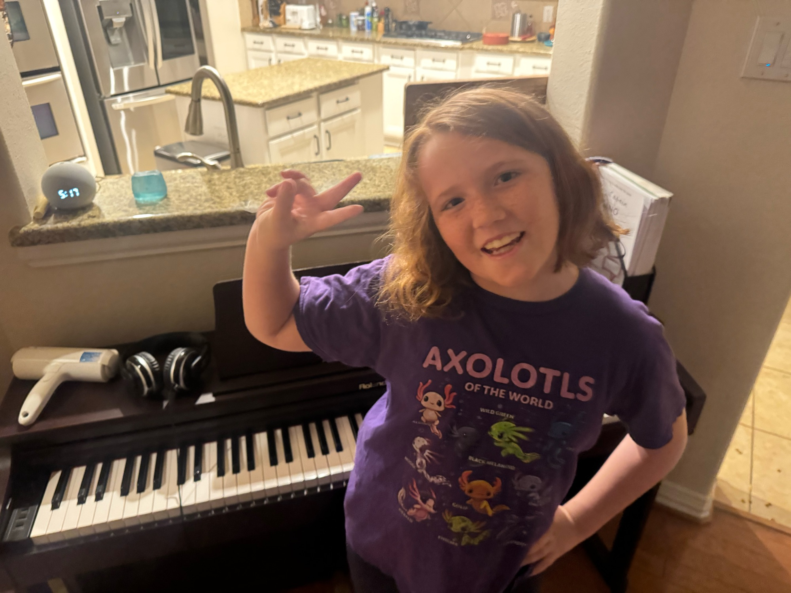
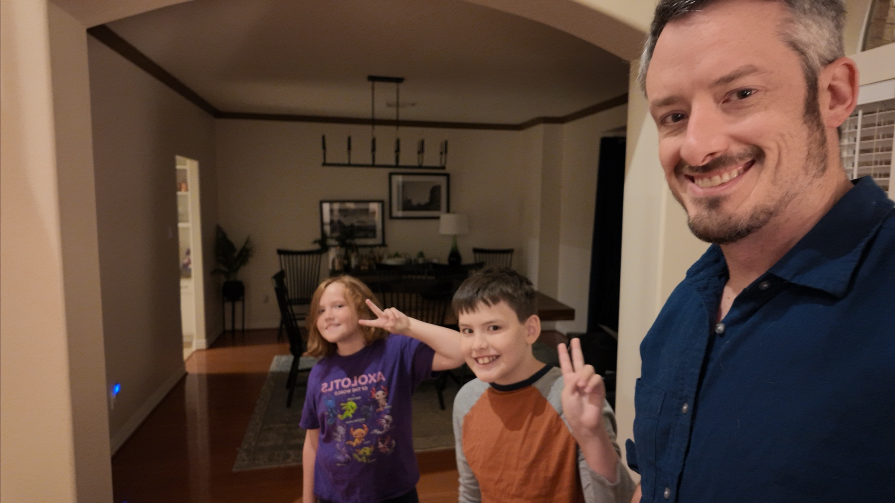
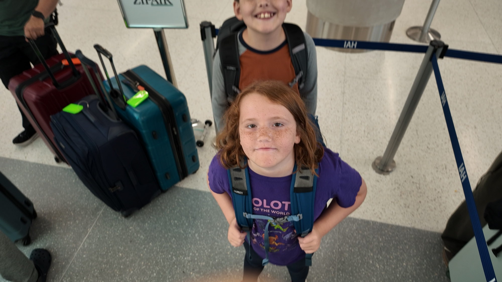
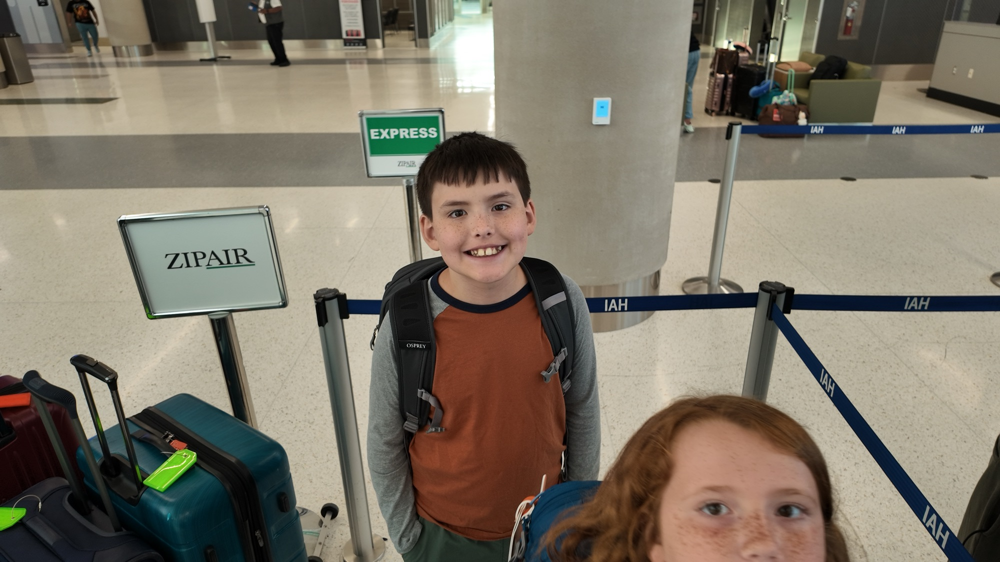
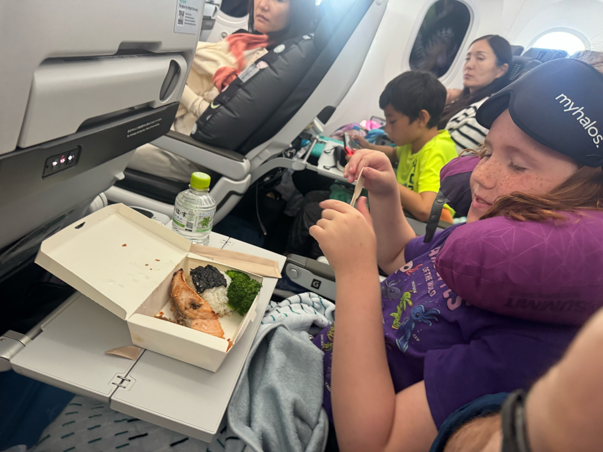
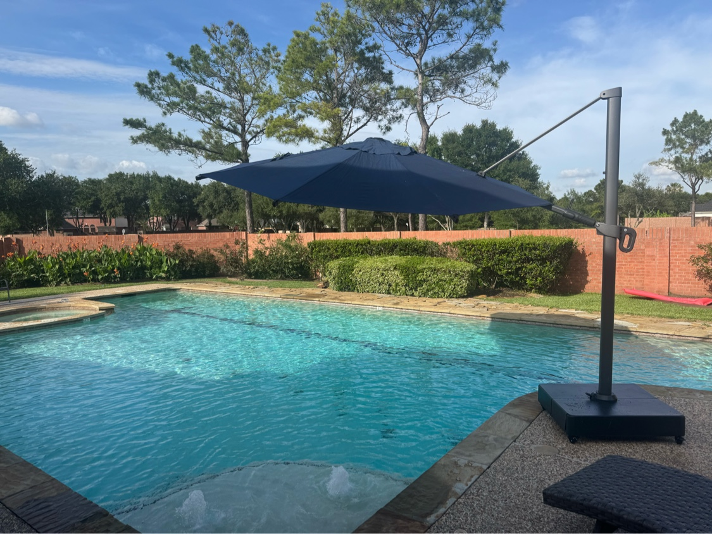
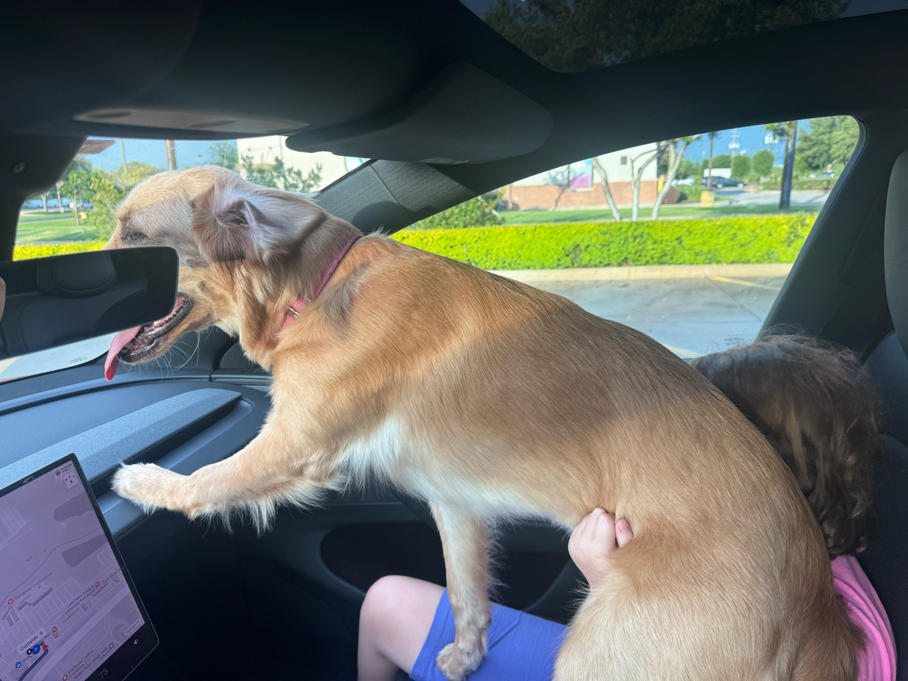
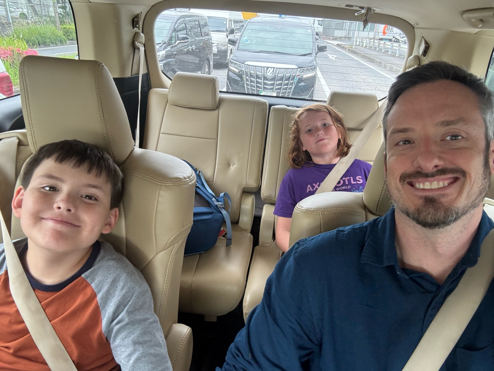
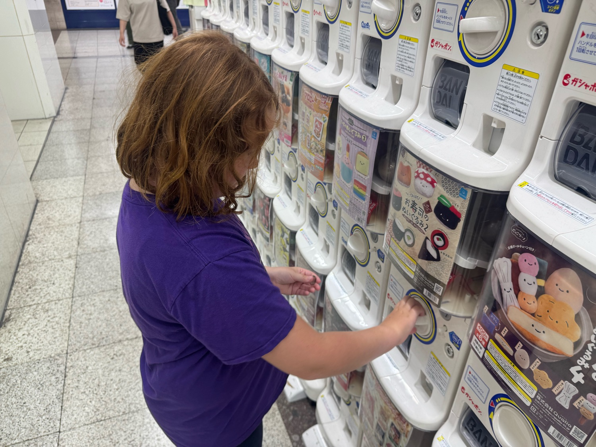

D1
Fly out✓ Recap
Monday, June 1
Flight
10:25 AM
ZIPAIR ZG015 · Houston IAH → Tokyo Narita
14 hours nonstop across the Pacific
Flight is crazy long but the kids have been troopers. Can't wait to get there.





D2
Arrive Tokyo✓ Recap
Tuesday, June 2
Tokyo
2:25 PM
Land at Narita
Afternoon
Skyliner to Nippori, then Yamanote Line to Ikebukuro
Evening
First dinner in Ikebukuro · ramen, curry, or conveyor-belt sushi
Arrival in Japan went well. Kids are exhausted so just a quick sushi dinner and wandering around the train station. Couldn't make it past 7:30.
Typhoon is coming tonight so reworking plans for tomorrow.




Upcoming
D3
Typhoon Day · Sunshine City
Wednesday, June 3
Tokyo
Morning
Slow start · sleep through the worst of the rain
A typhoon is sitting over the Tokyo area, so today stays local and indoors, all a short walk from base. Shibuya Sky and Akihabara move to later in the trip.
11:00 AM
Sunshine Aquarium · Sunshine City, Ikebukuro
Rooftop aquarium with penguins, otters, sea lions, jellyfish, and the overhead “flying penguin” tank
12:30 PM
Lunch in Sunshine City
2:00 PM
Konica Minolta “Manten” Planetarium · reclining domed show
A calm break in the middle of a storm day, in the same building as the aquarium
Afternoon
Namja Town · indoor amusement park · carnival games and the Gyoza Stadium
Evening
Early indoor dinner in Ikebukuro
D4
teamLab, Asakusa & Otter Cafe
Thursday, June 4
Tokyo
10:00 AM
teamLab Borderless at Azabudai Hills · immersive digital art, includes EN Tea House
Afternoon
Train to Asakusa · lunch at Nakamise-dori food stalls
Afternoon
Senso-ji Temple & the Nakamise shopping street
Late afternoon
Harry Asakusa Otter Cafe · otters, hedgehogs, and meerkats
D5
Shinkansen to Osaka & Dotonbori
Friday, June 5
Osaka
Morning
Shinkansen Tokyo → Shin-Osaka · ~2.5 hours, first bullet train ride
Sit on the right side for Mt. Fuji views · ekiben (train bento) for the journey
Late afternoon
Dotonbori · Glico Running Man, neon canal, takoyaki and okonomiyaki street food
D6
Universal Studios Japan
Saturday, June 6
Osaka
All day
Universal Studios Japan
Super Nintendo World, the Wizarding World of Harry Potter, Jurassic Park, and the big coasters
D7
Kyoto · Kiyomizu-dera & GEAR
Sunday, June 7
Kyoto
Morning
Train Osaka → Kyoto · ~55 minutes via JR
Lunch
Shimizu Okabeya · tofu and yuba (tofu skin) in the shopping area under Kiyomizu
Afternoon
Kiyomizu-dera Temple · the iconic wooden terrace overlooking the city
Afternoon
Higashiyama walk · the preserved wooden streets of Sannen-zaka, Ninnen-zaka, and Shimbashi
6:00 PM
GEAR · non-verbal performance in central Kyoto
D8
Fushimi Inari & Hiroshima Day Trip
Monday, June 8
Kyoto + Hiroshima
Early morning
Fushimi Inari Shrine · the iconic orange torii tunnel before crowds
Morning
Shinkansen Kyoto → Hiroshima · ~1h 35min
Midday
Hiroshima Peace Museum · ~2.5 hours
Afternoon
Shinkansen Hiroshima → Kyoto · back for the evening
D9
Back to Tokyo · Odaiba
Tuesday, June 9
Tokyo
~9:00 AM
Shinkansen Kyoto → Tokyo · ~2h 15min Nozomi, ekiben on board
~11:15 AM
Arrive Tokyo · drop bags at MIMARU Ikebukuro
Afternoon
Odaiba · Miraikan science museum, life-size Gundam, DiverCity, Tokyo Joypolis
D10
Fly home
Wednesday, June 10
Flight
Morning
Skyliner from Ikebukuro to Narita
10:30 AM
ZIPAIR ZG016 · Tokyo Narita → Houston IAH
Arrive 8:25 AM same calendar day · gain the day back